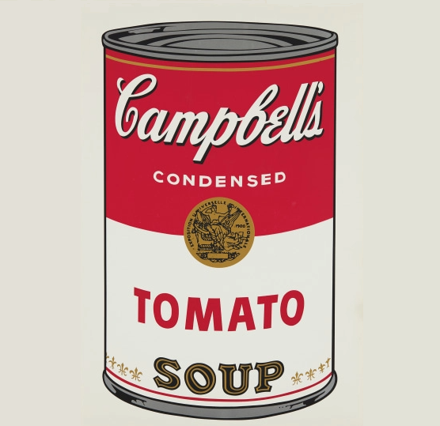
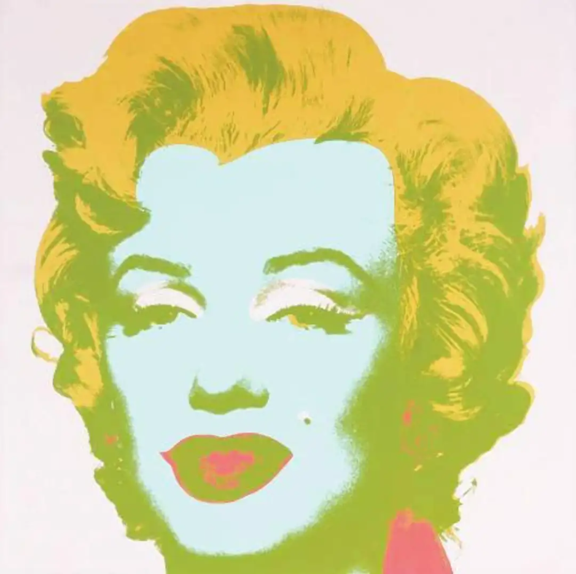
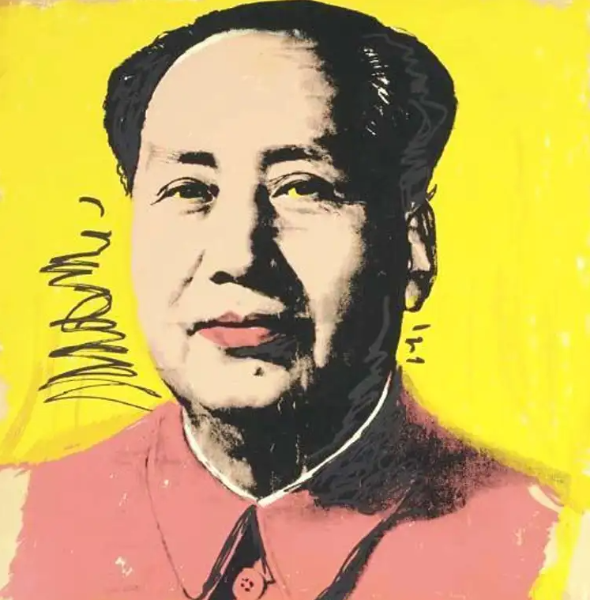
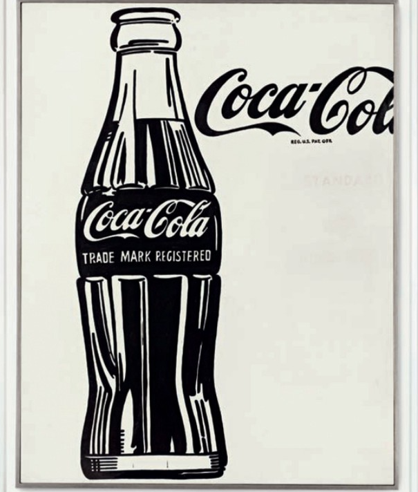

One cannot look at pop art or contemporary art today without associating pieces in some way to Andy Warhol. Andy's unique style was the perfect blend of commercial and freethinking works, he was able to create satire and provocation, while at the same time bringing stunning stills and details into his pieces.

Warhol showcases 32 works, each speaking to the 32 various soup products offered by Campbell's during that time. This creative work shows Warhol's ability to depict American food culture. He uses the enormous market demand for this product and in doing so, he wisely markets his own art. At the end of 1962, right after he finished Campbell's Soup Cans, Warhol started creating photographic silkscreens for his new works. The printmaking process was initially developed for commercial business use. However, he would combine his own unique style to the process and it would turn into his trademark medium. He would use his art-production techniques to market his art on a commercial scale.

Marilyn Monroe's photo in the 1953 film Niagara was the inspiration for this work of art, which depicts 59 pictures of Monroe. Strikingly, 25 of them showing up in color on the left side. The 25 on the right side have a blurred tone and are displayed in a high black and white contrast.

the Mao paintings utilize Warhol’s characteristic silkscreen process to transfer to canvas one of the most recognized portraits in the world: the photograph of Mao reproduced throughout China during the Cultural Revolution (1966–76). As interpreted by Warhol, these works, with their repeated image painted in flamboyant colors and with expressionistic marks, may suggest a parallel between political propaganda and capitalist advertising.

A symbol of modern mass consumerism, the Coca Cola bottle is an iconic American object which caught the fancy of Warhol. Warhol was attracted to the idea that no matter who you are, you cannot purchase a better coke or can of soup than the next person. The painting was sold for $57.2 million making it one of Warhol’s most expensive paintings ever sold.